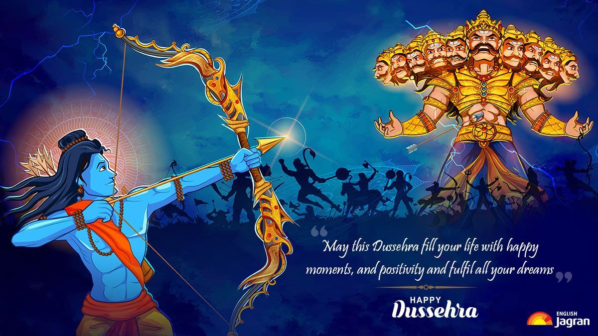

DUSSEHRA
Vijayadashami , also known as Dussehra,[a] Dasara or Dashain, is a major Hindu festival celebrated every year at the end of Navaratri. It is observed on the tenth day of the month of Ashvin, the seventh in the Hindu Luni-Solar Calendar.[6][7][8] The festival which typically falls in the Gregorian calendar months of September and October.
Vijayadashami is observed for different reasons and celebrated differently in various parts of the Indian subcontinent.[1][9][6] In the southern, eastern, northeastern, and some northern states of India, Vijayadashami marks the end of Durga Puja, remembering goddess Durga's victory against the buffalo demon Mahishasura to restore and protect dharma.[6][10][11] In the northern, central and western states, it marks the end of Ramlila and commemorates god Rama's victory over the demon king Ravana.

Alternatively, it marks a reverence for one of the aspects of goddess Devi, such as Durga or Saraswati.[1][7][8]
Vijayadashami celebrations include processions to a river or ocean front that involve carrying clay statues of Durga,[13] Lakshmi, Saraswati, Ganesha and Kartikeya, accompanied by music and chants, after which the images are immersed in the water for dissolution and farewell. In other places, towering effigies of Ravana, symbolising evil, are burnt with fireworks, marking evil's destruction. The festival also starts the preparations for Diwali, the important festival of lights, which is celebrated twenty days after Vijayadashami